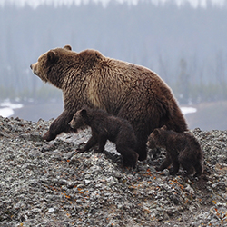
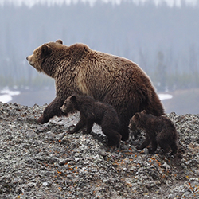
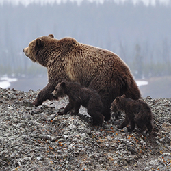

Pictures
 

The Brown Bear (Ursus arctos) is native to parts of northern Eurasia and North America. Its conservation status is currently Least Concern. There are many subspecies within the brown bear species, including the Atlas bear & the Himalayan brown bear.
Brown bears are not always completely brown. Some can be reddish or yellowish. They have very large, curved claws and huge paws. Male brown bears are often 30% larger than female brown bears. They can range from 5 feet to 9 feet from head to toe. They stay in high temperature which is > 20℃

To know more about Me and my College department, click on the image below: